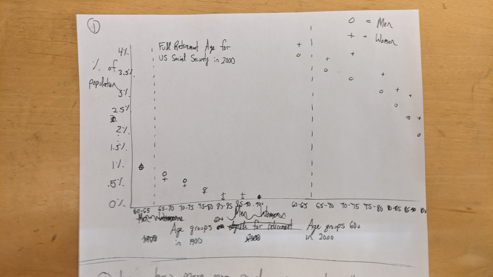
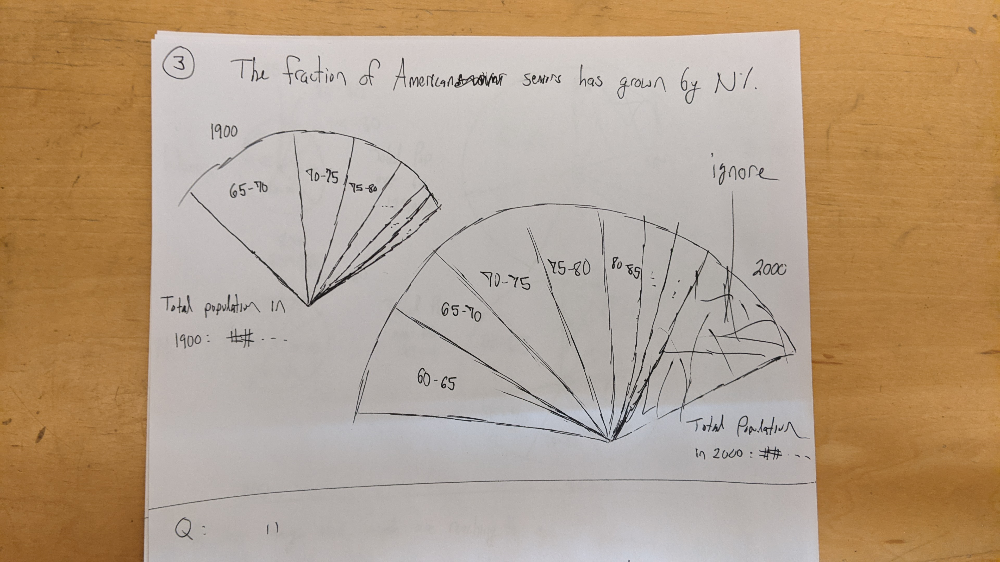

• Dashed line indicates federal age of retirement in 2000 (65) for social security to give the viewer a point of reference. Some folks retire early (in the 60-65 bracket), so this line may be misleading.
• This plot could be condensed with all lines stacked vertically, rather than repeating the x-axis; this change would improve clarity and conserve space.
• I thought to include a different dashed age line for 1900, but retirement was not legally codified until decades later. Perhaps this point of reference is therefore not useful?
• An annotation in the 2000 chart describing the Social Security age of retirement might be better than a dashed line.
• Explore bubble in the next plot so that magnitude of population can be visualized alongside the corresponding fractions
BRIEF CAPTION HERE.

BRIEF CAPTION HERE.
Design Rationale for Sketch 1:
RATIONALE_1
RATIONALE_2
RATIONALE_3
BRIEF CAPTION HERE.
Design Rationale for Sketch 2:
RATIONALE_1
RATIONALE_2
RATIONALE_3
BRIEF CAPTION HERE.
Design Rationale for Sketch 3:
RATIONALE_1
RATIONALE_2
RATIONALE_3
Reflection
WRITE REFLECTION ON ALL 3 SKETCHES HERE.
Phase Two: Final Design
ENTER IMAGE CAPTION HERE.
Design Process & Design Decisions
DESCRIBE YOUR DESIGN PROCESS AND DECISION DECISIONS HERE.